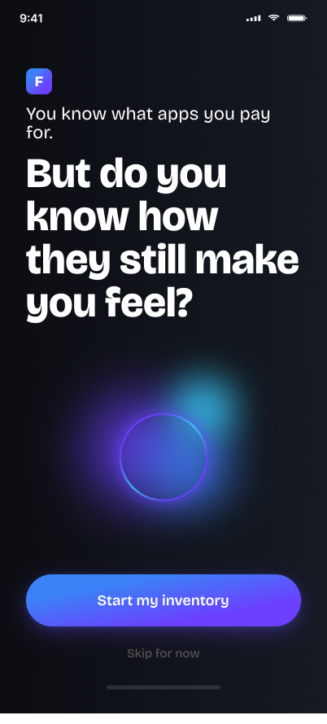
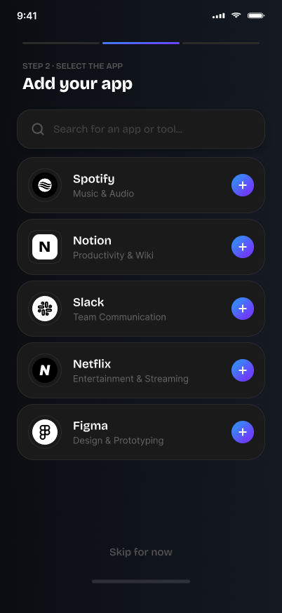
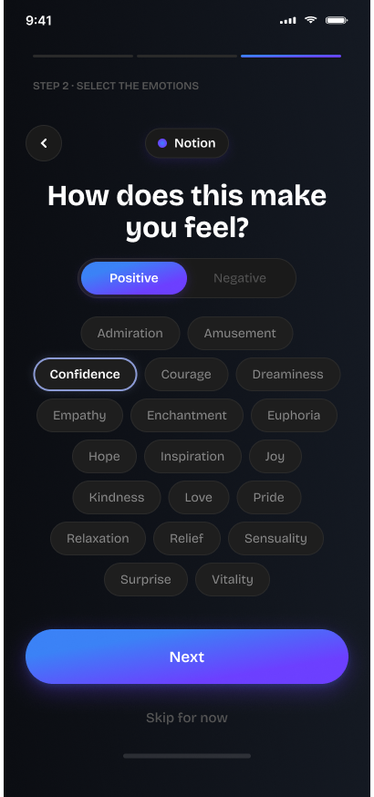
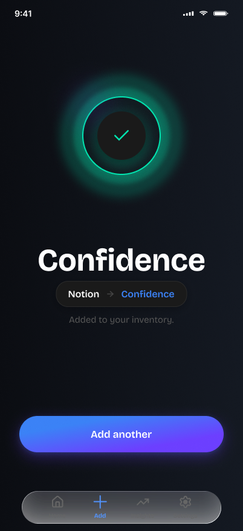
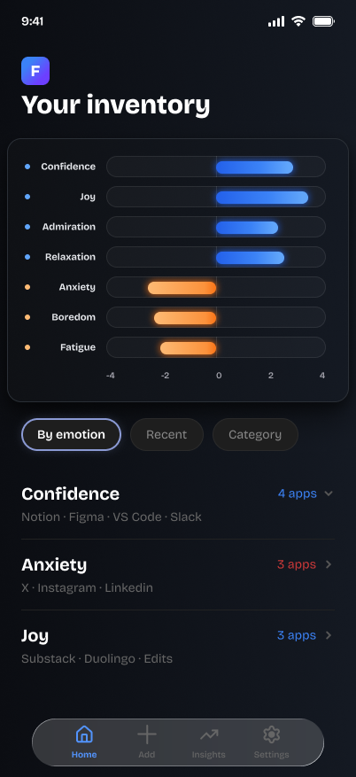
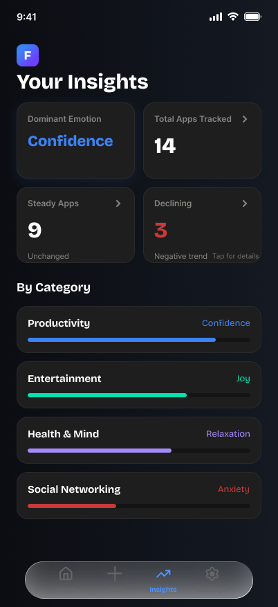
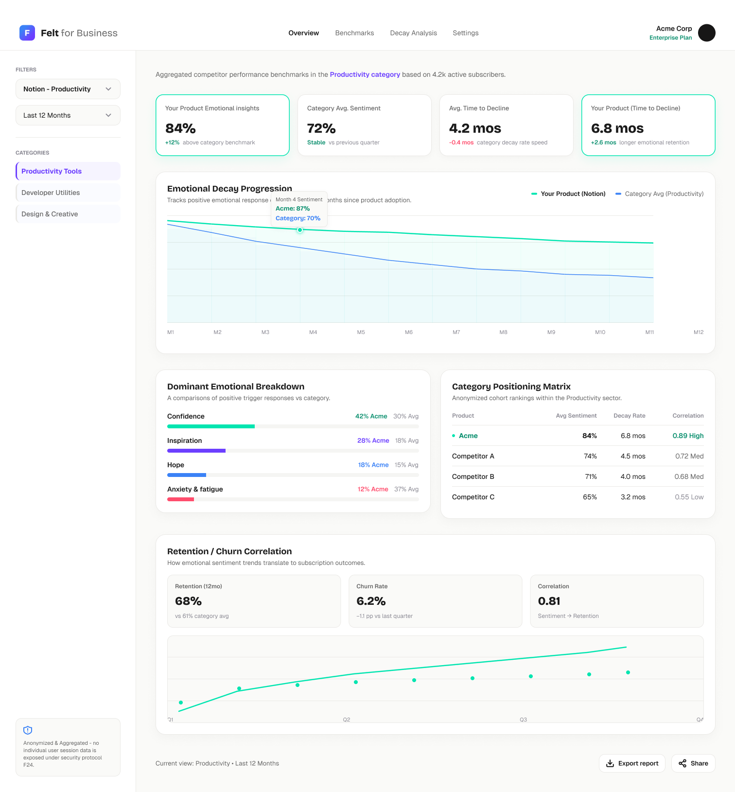

Felt rises from Emotion-Driven Innovation (E-DI), the methodology introduced in my PhD research and published in Emotion-Driven Innovation (Springer, 2024).
It takes the knowledge developed through that research and applies it toward a different end: understanding the emotional landscape of digital products themselves, rather than designing a single product's experience.
Felt is a personal inventory that tracks emotional experiences with digital products, not functional use. Many times we have products that are completely functional, and still we don't use them.
Felt makes that gap visible — the distance between a product that works and a product that people actually want in their lives.
Each time someone logs a check-in for an app or subscription, Felt builds a private, longitudinal record — not just the first impression, but whether that feeling has held steady or faded months later.
That record becomes evidence for two decisions people rarely have real data for:
- Whether to start a new subscription, based on their own history with similar tools
- Whether to cancel one they already have, based on how it's actually made them feel over time — not a guess made in the moment
The same data, aggregated and anonymised, becomes a different asset for the companies building these products.
Where existing review platforms (G2, Capterra) offer a public, point-in-time star rating, Felt offers a private, first-party signal of how emotional response actually changes over time — closer to a retention indicator than a review score.
Two connected experiences: the consumer app where people log their emotional check-ins, and the business view where companies read the aggregated, anonymised signal.







Felt is a self-initiated product concept building on my published research, Emotion-Driven Innovation (Springer, 2024). The screens shown are exploratory and represent work in progress.